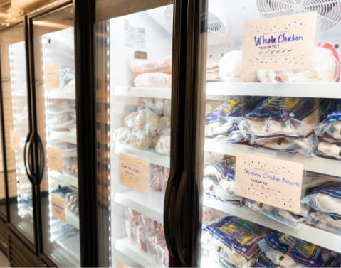

Mobile distribution for North Campus — Fall 2023 semester
Students who live on North Campus have easier access to free
groceries thanks to U-M’s Maize & Blue Cupboard (MBC), the College
of Engineering, Student Life, and Ann Arbor-based Food Gatherers.

Federal assistance for food insecurity
The U.S. Department of Agriculture offers a nationwide program to help
people who are struggling with food insecurity. The national name for
the program is Supplemental Nutrition Assistance Program (SNAP).
In Michigan, the Michigan Department of Health and Human Services oversees SNAP.

Fall 2024 mobile distribution for North Campus
U-M’s Maize & Blue Cupboard (MBC), the College of Engineering, Student
Life, and Ann Arbor-based Food Gatherers will host North Campus mobile
food distributions to make MBC resources more accessible for North Campus
residents.

Gluten free fundamentals
Have you ever heard someone mention the words “gluten free”? Or maybe
you’ve seen it on a food label? Read on to learn more!

What are the dietary guidelines for Americans?
Most Americans have heard of the USDA and their Dietary Guidelines
for Americans (DGAs). But not many people are truly aware what these
DGAs are, and how they are determined. Luckily, this article should provide
answers to some of those mysteries!